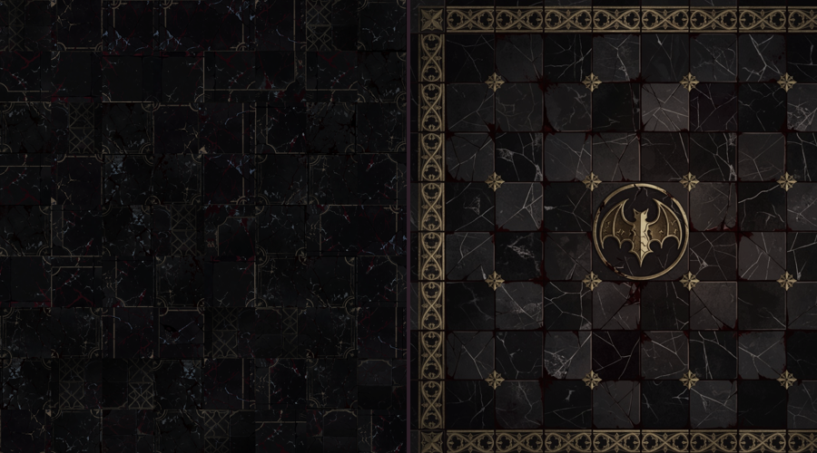
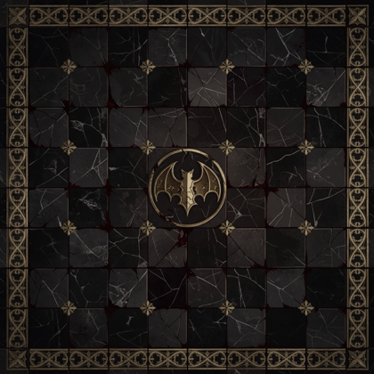
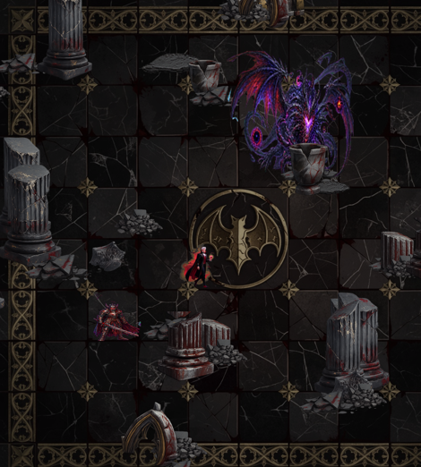

隨機拼貼 vs 設計鋪法

不是隨機打散，是一個完整的鋪面設計：棋盤式交錯的地磚、外圈金色紋飾邊框、四角金花、正中央的蝠形紋章。還沒進遊戲。



上一版要「每格換一張」，得把地板從單一個 Tiled 的 SpriteRenderer 改成「跟著玩家維護一片格子」，是一整段新程式。
這一版不用。設計是畫在貼圖裡的，所以現有的平鋪機制直接就能用——只要換貼圖跟改一個平鋪尺寸（4 → 9 單位）。重複週期從 4 單位拉到 9 單位，而畫面只看得到約 6.5×7.2 單位，等於一次頂多看到一個模組，重複也不會落在同一個畫面裡。
生成出來的原圖比其他關的地面亮不少（平均 29.4，森林才 16.3），金色邊框跟中央紋章又是全畫面最亮的東西，角色站上去會被搶掉。壓到 21.1（亮於 120 的像素 1.56% → 0.23%）之後角色就讀得出來了，設計感也沒掉。上面那張場景圖是壓過的版本。
這一輪 1 張生圖 ≈ $0.2；累計約 $6。沒有遇到 Grok 額度不足。